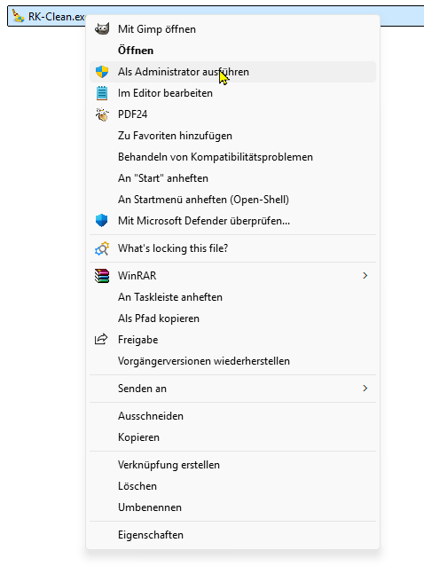
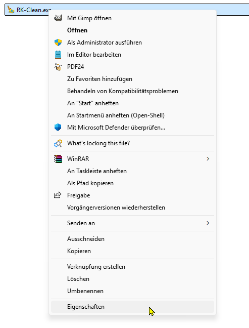
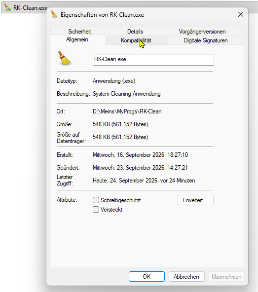
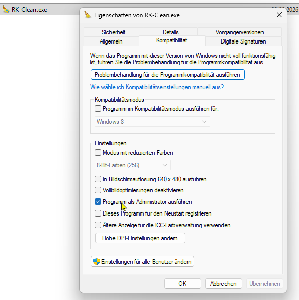

Warum werden Administratorrechte benötigt?
Einige Tools (wie z. B. RK-Clean, RK-Moti und RK-Tasks) müssen tiefere Systemeinstellungen anpassen – etwa verwaiste Dateien in geschützten Windows-Ordnern löschen oder Einträge im Autostart verwalten. Windows blockiert diese Zugriffe standardmäßig zum Schutz des Systems, weshalb das Programm explizit als Administrator gestartet werden muss.
Methode 1: Einmalig als Administrator ausführen (Zum Testen)
Wenn du das Programm nur ein einziges Mal mit erhöhten Rechten starten möchtest, reicht ein einfacher Rechtsklick:
-
Der schnelle Rechtsklick:
Klicke mit der rechten Maustaste auf die heruntergeladene.exe-Datei und wähle im Menü den Punkt
Als Administrator ausführen.
Methode 2: Programm dauerhaft als Administrator ausführen
Damit du nicht bei jedem Start manuell den Rechtsklick nutzen musst, kannst du Windows anweisen, das Tool immer automatisch so zu starten:
-
Rechtsklick auf die Programmdatei:
Klicke mit der rechten Maustaste auf die Datei und wähle ganz unten Eigenschaften.
-
Reiter "Kompatibilität" wählen:
Wechsle im neu geöffneten Fenster oben auf den Reiter Kompatibilität.
-
Haken setzen:
Setze im unteren Bereich einen Haken bei "Programm als Administrator ausführen".
-
Speichern:
Klicke erst auf Übernehmen und dann auf OK. Fertig!
Hinweis: Beim nächsten Start fragt dich Windows einmalig, ob das Programm Änderungen vornehmen darf (UAC-Abfrage). Bestätige dies einfach mit "Ja".